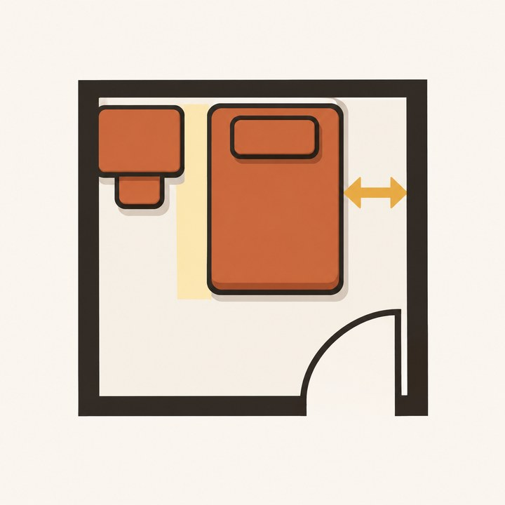

iPhone・iPad・Android の家具配置と間取り
その家具、
置けるか先に確かめる。
部屋の図面に家具を実寸（mm）で置いて、壁や家具とのすき間と通り道を数字で確かめます。間取り図の写真から縮尺を合わせられ、模様替えの案を並べて比べられます。保存も家具の数も制限はありません。
App Store・Google Play で配信予定買い切りで全部の機能が使えます。アプリ内課金・サブスクリプション・広告はありません。

こんな困りごとのために
保存や家具の数が有料
おきどころは買い切りです。保存も、家具や部屋や案の数も、制限はありません。
図面の縮尺が合わない
間取り図の写真や PDF を取りこみ、2点を選んで実際の長さを入れると縮尺が合います。ななめの写真は4隅で直せます。
置けるかが分からない
壁や家具とのすき間を数字で出し、重なりは赤、通り道が 60cm より狭い所は黄色で知らせます。ドアの開く範囲も描きます。
思いどおりに動かない
くっつき（スナップ）は切りかえられ、矢印で 1cm ずつ、長押しで 1mm ずつ動かせます。数字を入れて直すこともできます。
模様替えの前と後を比べたい
1つの間取りに置き方の案をいくつでも作り、2つを並べて比べられます。
作ったものが消えた
1つ動かすごとに保存します。毎日の控えとゴミ箱（30日）があります。通信は iCloud だけで、オフラインで使えます。
できること
| 図面 | 写真・PDF の取りこみ・2点と長さで縮尺・4隅で傾きを直す・部屋を mm で描く・ドアと窓 |
|---|---|
| 家具 | よくある家具の寸法の目安・自分の家具（幅・奥行き・高さ・四角・円・L 字） |
| 確かめる | すき間の数字・重なりとはみ出し・通り道（幅を変えられる）・ドアの開く範囲・2点の距離 |
| 動かす | スナップ・1cm と 1mm の微調整・90°と自由な回転・数字で直す |
| 案 | 置き方の案をいくつでも・2つを並べて比べる |
| データ | iCloud で iPhone と iPad をそろえる・毎日の控えとゴミ箱（30日）・画像・PDF・印刷・アカウントなし・解析と広告なし |
使い方・プライバシーポリシー・利用規約もご覧ください。